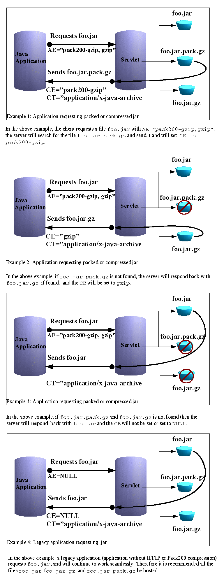

|
|
Pack200 와 압축 |
이 장에서는, 다음의 토픽에 대해 설명합니다.
서버나 네트워크의 이용도 및 대역폭을 향상시키기 위해서(때문에), Java 어플리케이션이나 애플릿의 배치 시에 gzip 와 Pack200 라고 하는 2 개의 압축 형식을 이용할 수 있게 되었습니다.
어느 쪽인가의 기술을 사용해 압축한 JAR 파일을 네트워크상에서 전송해, 수신측의 어플리케이션으로 압축 해제해 복원합니다.
HTTP 1.1 (RFC 2616) 프로토콜에서는, HTTP 압축을 취급합니다. HTTP 압축에 의해, 어플리케이션에서는 JAR 파일이 압축된 JAR 파일인 채 배치할 수가 있습니다. 지원되는 압축 기술은 gzip,compress,deflate 입니다.
JDK/JRE 버젼 5.0 에서는, HTTP 압축은 RFC 2616 에 준거해 Java Web Start 와 Java Plug-in 에 구현되고 있습니다. 지원되는 기술은 gzip 및 pack200-gzip 입니다.
요구측의 어플리케이션은, HTTP 요구를 서버에 송신합니다. HTTP 요구에는 필드가 다수 있습니다. Accept-Encoding (AE) 필드는 pack200-gzip 또는 gzip 로 설정되어 어플리케이션이 pack200-gzip 또는 gzip 형식을 처리할 수 있는 것을 서버에 통지합니다.
서버의 구현에서는, 파일 확장자(extension)가 . pack.gz 또는 . gz 인 요구된 JAR 파일을 검색해, 검색한 파일을 돌려줍니다. 서버는 송신하고 있는 파일의 타입에 응해, 응답 헤더의 Content-Encoding (CE) 필드에 pack200-gzip,gzip, 또는 null 를 설정해, 옵션으로서 Content-Type (CT)를 어플리케이션 또는 Java 어카이브(archive)로서 설정합니다. 따라서, 요구측의 어플리케이션에서는, CE 필드를 검사하는 것으로, 대응하는 변환을 실행해, 원의 JAR 파일에 복원합니다.

이 예는, 단순한 서브 렛 또는 서버 모듈과 HTTP 1.1 준거의 Web 서버를 사용해 실현될 수 있습니다. 파일을 가동시에 압축하면(자), Pack200 를 사용하는 경우는 특히 서버의 퍼포먼스가 저하하기 (위해)때문에, 추천 되지 않습니다.
Tomcat 서브 렛의 예:
/** * A simple HTTP Compression Servlet */ import java.util. *; import java.io. *; import javax.servlet. *; import javax.servlet.http. *; import java.util.zip. *; import java.net. *; /** * The servlet class. */ public class ContentType extends HttpServlet { private static final String JNLP_MIME_TYPE = "application/x-java-jnlp-file"; private static final String JAR_MIME_TYPE = "application/x-java-archive"; private static final String PACK200_MIME_TYPE = "application/x-java-pack200"; // HTTP Compression RFC 2616 : Standard headers public static final String ACCEPT_ENCODING = "accept-encoding"; public static final String CONTENT_TYPE = "content-type"; public static final String CONTENT_ENCODING = "content-encoding"; // HTTP Compression RFC 2616 : Standard header for HTTP/Pack200 Compression public static final String GZIP_ENCODING = "gzip"; public static final String PACK200_GZIP_ENCODING = "pack200-gzip"; private void sendHtml(HttpServletResponse response, String s) throws IOException { PrintWriter out = response.getWriter(); out.println("<html>"); out.println("<head>"); out.println("<title>ContentType</title>"); out.println("</head>"); out.println("<body>"); out.println(s); out.println("</body>"); out.println("</html>"); } /* * Copy the inputStream to output , */ private void sendOut(InputStream in, OutputStream ostream) throws IOException { byte buf[] = new byte[8192]; int n = in.read(buf); while (n > 0 ) { ostream.write(buf, 0, n); n = in.read(buf); } ostream.close(); in.close(); } boolean doFile(String name, HttpServletResponse response) { File f = new File(name); if (f.exists()) { getServletContext(). log("Found file " + name); response.setContentLength(Integer.parseInt( Long.toString(f.length()))); response.setDateHeader("Last-Modified", f.lastModified()); return true; } getServletContext(). log("File not found " + name); return false; } /** Called when someone accesses the servlet. */ public void doGet(HttpServletRequest request, HttpServletResponse response) throws IOException, ServletException { String encoding = request.getHeader(ACCEPT_ENCODING); String pathInfo = request.getPathInfo(); String pathInfoEx = request.getPathTranslated(); String contentType = request.getContentType(); StringBuffer requestURL = request.getRequestURL(); String requestName = pathInfo; ServletContext sc = getServletContext(); sc.log("----------------------------"); sc.log("pathInfo="+pathInfo); sc.log("pathInfoEx="+pathInfoEx); sc.log("Accept-Encoding="+encoding); sc.log("Content-Type="+contentType); sc.log("requestURL="+requestURL); if (pathInfoEx == null) { response.sendError(response.SC_NOT_FOUND); return; } String outFile = pathInfo; boolean found = false; String contentEncoding = null; // Pack200 Compression if (encoding ! = null && contentType ! = null && contentType.compareTo(JAR_MIME_TYPE) == 0 && encoding.toLowerCase(). indexOf(PACK200_GZIP_ENCODING) > -1){ contentEncoding = PACK200_GZIP_ENCODING; if (doFile(pathInfoEx.concat(". pack.gz"), response)) { outFile = pathInfo.concat(". pack.gz") ; found = true; } else { // Pack/Compress and transmit, not very efficient. found = false; } } // HTTP Compression if (found == false && encoding ! = null && contentType ! = null && contentType.compareTo(JAR_MIME_TYPE) == 0 && encoding.toLowerCase(). indexOf("gzip") > -1) { contentEncoding = GZIP_ENCODING; if (doFile(pathInfoEx.concat(". gz"), response)) { outFile = pathInfo.concat(". gz"); found = true; } } // No Compression if (found == false) { // just send the file contentEncoding = null; sc.log(CONTENT_ENCODING + "=" + "null"); doFile(pathInfoEx, response); outFile = pathInfo; } response.setHeader(CONTENT_ENCODING, contentEncoding); sc.log(CONTENT_ENCODING + "=" + contentEncoding + " : outFile="+outFile); if (sc.getMimeType(pathInfo) ! = null) { response.setContentType(sc.getMimeType(pathInfo)); } InputStream in = sc.getResourceAsStream(outFile); OutputStream out = response.getOutputStream(); if (in ! = null) { try { sendOut(in, out); } catch (IOException ioe) { if (ioe.getMessage(). compareTo("Broken pipe") == 0) { sc.log("Broken Pipe while writing"); return; } else throw ioe; } } else response.sendError(response.SC_NOT_FOUND); } }
Pack200 에서는, JAR 내의 클래스 파일의 밀도와 사이즈에 응해, 사이즈의 큰 파일을 매우 효율적으로 압축할 수 있습니다. JAR 파일에 포함되어 있는 것이 클래스 파일만으로, 그 크기가 수 MB 정도 밖에 없으면, 9 분의 1 에 압축하는 일도 가능합니다.
전술의 예와 같은 jar 파일을 사용하면(자) 다음과 같은 결과가 됩니다.
Notepad.jar 46.25 kb
Notepad.jar.pack.gz 22.58 kb
이 경우 같은 jar 파일의 사이즈는 50% 삭감됩니다.
주 -큰 사이즈의 jar 파일을 서명하면(자), 시큐리티 에러에 의해 스텝 5 가 실패하는 일이 있습니다. 이 에러의 상당수는, 버그 5078608 이 원인입니다. release notes 에 설명되고 있는 대책을 실행해 주세요.
Pack200 는 Java 클래스 파일에 대해서, 가장 효율의 좋은 방법입니다. 다음과 같은 복수의 기술을 사용해, 효과적으로 JAR 파일의 사이즈를 작게 합니다.
파일을 팩 (압축) 하는 순서
1. JAR 파일의 사이즈, JAR 파일의 내용, 및 대상으로 하는 사용자의 대역폭을 검토합니다.
이러한 요인 모든 것을 고려해 압축 기술을 선택합니다. unpack200 는, 가능한 한효율적인 동작을 하도록(듯이) 설계되고 있고, 또 단시간에 원의 파일을 복원합니다. JAR 파일의 사이즈가 크고 (2 MB 이상), 그 대부분이 클래스 파일인 경우는, Pack200 가 추천 됩니다. 그 대부분이 resource file (JPEG, GIF, 데이터등)인 큰 JAR 파일의 경우는, gzip 가 추천 됩니다.
2. Pack200 세그먼트(segment) 기능
Pack200 에서는, 팩 파일 전체를 메모리에 로드합니다. 그러나, 타겟 시스템의 메모리와 자원에 제한이 있는 경우,
Pack200.Packer.SEGMENT_LIMIT를 작은 값으로 설정하는 것으로, 팩 및 unpack로 필요한 메모리량을 줄일 수가 있습니다.Pack200.Packer.SEGMENT_LIMIT=-1로 설정하면(자), 생성하는 세그먼트(segment)를 강제적으로 1 개(살)로 하기 (위해)때문에 사이즈의 삭감에 효과가 있습니다만, 팩 및 unpack 하는 시스템에서는, Java heap를 많이 사용합니다. 이러한 팩 된 세그먼트(segment)의 몇개인가는, 1 개의 팩 된 파일을 생성하기 위해서 연결되는 것에 주의해 주세요.3. JAR 파일의 서명
Pack200 에서는, 생성되는 JAR 파일의 내용을 재배치합니다. jarsigner 에서는, 클래스 파일의 내용을 해시화해, Manifest내의 암호화된 다이제스트에 해시를 포함합니다. unpack 어플리케이션을 팩 된 파일에 대해서 실행하면(자), 클래스의 내용이 재배치되기 (위해)때문에, 서명이 무효가 됩니다. 그 때문에, pack200 및 unpack200 를 사용해 먼저 JAR 파일을 정규화하고 나서, 서명할 필요가 있습니다.
(이와 같이 실시할 수 있는 이유:팩 프로그램이 실행하는 클래스 파일 구조의 재배치나무등이기 (위해)때문에, 2 번째의 팩에서는, 최초의 팩으로 생성된 순서가 변경되지 않는다. 또 unpack 프로그램에서는, 어떠한 어카이브(archive) 요소의 전송 순서에 대해서도 특정의 바이트 이미지를 생성하는 것이, JSR 200 스펙으로 보증되고 있다)
례
HelloWorld.jar 를 사용한다고 합니다.
스텝 1: jar 파일을 정규화하기 위해서 파일을 재팩 합니다. 재팩에서는, 팩의 실행과 파일의 unpack가 1 회의 스텝에서 행해집니다.% pack200 --repack HelloWorld.jar
스텝 2:재팩을 사용해 정규화한 후에, jar 파일에 서명합니다.% jarsigner -keystore myKeystore HelloWorld.jar ksrini
서명한 jar 파일을 검증해 서명되고 있는 것을 확인합니다.% jarsigner -verify HelloWorld.jar
jar verified.
jar 파일이 실행 가능한 것을 확인합니다.% Java -jar HelloWorld.jar
HelloWorld
스텝 3:파일을 팩 합니다.% pack200 HelloWorld.jar.pack.gz HelloWorld.jar
스텝 4:파일을 unpack 합니다.% unpack200 HelloWorld.jar.pack.gz HelloT1.jar
스텝 5:jar 파일을 검증합니다.% jarsigner -verify HelloT1.jar
jar verified.
// Test the jar ...% Java -jar HelloT1.jar
HelloWorld
검증 후, 압축된 팩 파일 HelloWorld.jar.pack.gz 가 배치됩니다.4. 사이즈 삭감의 테크닉
Pack200 는, 디폴트에서는 High Fidelity (Hi-Fi) 모드로 동작합니다. 따라서, JAR 파일의 개별 엔트리마다의 속성과 클래스에 있는 원의 속성은 모두 보관 유지됩니다. 일반적으로 팩 된 파일 사이즈는 증가하는 경향이 있습니다만, 다운로드의 사이즈를 삭감하기 위해서 사용할 수 있는 테크닉의 몇개인가를 설명합니다.
- 갱신 시각 : JAR 파일내의 각 엔트리의 갱신 시각이 중요하지 않은 경우는, 옵션
Pack200.Packer.MODIFICATION_TIME="LATEST"를 설정할 수 있습니다. 이렇게 하는 것으로, 팩 파일로 전송 되는 갱신 시각은 세그먼트(segment) 마다 1 개(살)이 됩니다. 최신 시각은, 그 세그먼트(segment)내 모든 엔트리에서 가장 새롭게 갱신되었을 때 각이 됩니다.- 압축 지시:상기와 같게, 어카이브(archive)내의 각 엔트리의 압축 상태태가 필요없는 경우는, Pack200.Packer.DEFLATION_HINT="false" 와 설정합니다. 이렇게 하면(자) 개별의 압축 지시는 전송 되지 않기 때문에, 정확히 알 수 없는 것입니다만 다운로드하는 사이즈가 작아집니다. 그러나, jar 파일은 변환될 때, 「포함」된 엔트리를 포함하기 위해서(때문에), 타겟 시스템에서는 디스크 소비 영역이 증가합니다.
예를 나타냅니다.
pack200 --modification-time=latest --deflate-hint="true" tools-md.jar.pack.gz tools.jar주:상기의 최적화는, 몇천의 엔트리를 포함한 JAR 파일에서는 효과가 현저하게 됩니다.
- 속성 :JAR 파일의 배치시에는 필요가 없는 클래스 속성이 있습니다. 이러한 속성은 클래스 파일로부터 제외한 것이 가능해, 다운로드하는 사이즈를 큰폭으로 줄일 수가 있습니다. 그러나, 필수의 실행시 속성은 보관 유지하도록 주의해 주세요.
- 디버그 속성:행 번호나 원시 파일이라고 하는 디버그 정보는 필요없기 때문에 (이것들은 일반적으로은 어플리케이션의 스택 트레이스내에 있다), 이러한 속성은
Pack200.Packer.STRIP_DEBUG=true를 지정해 파기할 수 있습니다. 이것에 의해, 팩 된 파일의 사이즈는, 일반적으로 약 10% 줄어듭니다.례:
pack200 --strip-debug tools-stripped.jar.pack.gz tools.jar
- 그 외의 속성:경험 풍부한 사용자는, 다른 스트립 관련 프로퍼티을 사용해, 다른 속성을 삭제할 수 있습니다. 다만 그 경우는, 한층 더 주의가 필요합니다. 생성되는 JAR 파일이 상정되는 모든 Java 실행 시스템으로 테스트해, 그 실행 시스템이 삭제한 속성에 의존하고 있지 않는 것을 확인해 주세요.
5. 미지의 속성의 처리
6. 인스톨러Pack200 는, Java 가상 머신 스펙에 의해 정의되는 표준적인 속성에 대응합니다만, 컴파일러는 커스텀 속성의 영향을 받지 않습니다. 커스텀 속성이 존재하면(자), 디폴트에서는, Pack200 는 클래스를 통과해 경고 메세지를 발행합니다. 이러한, 「통과」하는 클래스 파일에 의해, 팩 한 파일의 사이즈가 커지는 경우가 있습니다. JAR 파일의 클래스내에, 미지의 속성이 많이 사용되고 있는 경우, 팩 된 출력의 사이즈가 매우 커지는 경우가 있습니다. 그 경우는, 다음의 방법을 검토해 주세요.
속성이 실행시에 불필요하다라고 판단되는 경우, 속성을 없앱니다. 이것은 프로퍼티 Pack200.Packer.
UNKNOWN_ATTRIBUTE=STRIP또는pack200 --unknown-attribute=strip foo.pack.gz foo.jar
(을)를 설정하는 것으로써 실현됩니다.pack200 --unknown-attribute=strip foo.pack.gz foo.jar
속성이 실행시에 필요해, 확대의 원인이 되는 경우, 경고 메세지로부터 속성을 특정해, 적절한 배치를 실시합니다. 이 방법에 대해서는, Pack200 JSR 200 의 스펙, 및 Java API 레퍼런스의 Pack200.Packer 로 설명되고 있습니다.
컴파일러가, Pack200 의 레이아웃 스펙내에서 구현되지 않는 속성을 정의하는 일도 가능합니다만, 팩 시에 장해의 원이 되는 경우가 있습니다. 그 경우, 클래스 파일명을 자원과 같이 하는 것으로, 클래스 파일 전체를 「통과」시킬 수가 있습니다. 다음과 같이 지정합니다.
pack200 --pass-file="com/acme/foo/bar/baz.class" foo.pack.gz foo.jar
또는, 디렉토리와 그 내용 전체를 이하와 같이 지정합니다.pack200 --pass-file="com/acme/foo/bar/" foo.pack.gz foo.jar
인스톨 프로그램에 대해 Pack200 테크놀러지의 기능을 이용하기 위해서는, 제품의 JAR 파일은, Pack200 를 사용해 압축해, 인스톨 때에 압축 해제할 필요가 있습니다. 인스톨에 JRE 또는 JDK 를 포함할 수 있고 있는 경우, 배포된 「bin」디렉토리에 있는 unpack200 (Unix) 또는 unpack200.exe (Windows)를 자유롭게 사용할 수가 있습니다. 이 구현은 순수한 C++ 어플리케이션이므로, 실행하기 위해서 Java 런타임은 필요는 없습니다.Windows: 인스톨러는, GZIP 보다 뛰어난 알고리즘을 사용해 엔트리를 압축합니다. 다음과 같이 pack200 를 사용하면, 인스톨러 자체의 압축 알고리즘에 의해, 보다 좋은 압축 효과를 얻을 수 있습니다.pack200 --no-gzip foo.jar.pack foo.jar
이것에 의해, gzip 로서 압축된 출력 파일이 되는 것을 막을 수가 있습니다.
unpack200 는, Windows 콘솔의 어플리케이션입니다. 즉 인스톨중에는 MS-DOS 윈도우를 표시합니다. 이것을 막으려면 다음에 나타내도록(듯이), 이 윈도우를 비표시로 하는 WinMain 에 의한 기동 툴을 사용합니다.
샘플 코드:
#include "windows.h" #include <stdio.h> int APIENTRY WinMain(HINSTANCE hInstance, HINSTANCE hPrevInstance, LPSTR lpCmdLine, int nCmdShow) { STARTUPINFO si; memset(&si, 0, sizeof(si)); si.cb = sizeof(si); PROCESS_INFORMATION pi; memset(&pi, 0, sizeof(pi)); //Test //lpCmdLine = "c:/build/windows-i586/bin/unpack200 -l c:/Temp/log c:/Temp/rt.pack c:/Temp/rt.jar"; int ret = CreateProcess(NULL, /* Exec. name */ lpCmdLine, /* cmd line */ NULL, /* proc. sec. attr. */ NULL, /* thread sec. attr */ TRUE, /* inherit file handle */ CREATE_NO_WINDOW | DETACHED_PROCESS, /* detach the process/suppress console */ NULL, /* env block */ NULL, /* inherit cwd */ &si, /* startup info */ &pi); /* process info */ if ( ret == 0) ExitProcess(255); // Wait until child process exits. WaitForSingleObject( pi.hProcess, INFINITE ); DWORD exit_val; // Be conservative and return if (GetExitCodeProcess(pi.hProcess, &exit_val) == 0) ExitProcess(255); ExitProcess(exit_val); // Return the error code of the child process return -1; }
팩 되고 있는 것도 unpack 되고 있는 것도 포함해 모든 JAR 파일은, 어플리케이션의 테스트 합격 기준에 따라 문제가 없는 것을 테스트할 필요가 있습니다. 커멘드행 인터페이스 pack200 를 사용하면(자),gzip 와 디폴트 설정을 사용해 출력 파일이 압축됩니다. 단순한 팩 파일을 작성해, 압축에는 사용자가 지정한 옵션으로 gzip 를 사용하거나 다른 압축 프로그램을 사용하거나 하는 것이 가능합니다.
상세한 것에 대하여는,「배치 툴」의
pack200및unpack200를 참조해 주세요.
Java SE 6 에서는, Java 클래스 파일 형식이 변경되었습니다. 상세한 것에 대하여는,「JSR 202: Java Class File Specification Update」를 참조해 주세요. JSR 202 에 의해, 다음의 이유로부터, Pack200 엔진을 적당 갱신할 필요가 있습니다.
- Java SE 6 의 새로운 클래스 파일 형식에 대응한다.
- Java SE 6 의 클래스 파일을 효율적으로 압축한다.
변경점을 최소한으로 억제해 사용자에게 의식시키지 않게 하기 위해서, 압축 프로그램은 입력 클래스 파일의 버젼에 근거해, 적절한 버젼의 팩 파일을 생성합니다.
또, 하위 호환성을 보관 유지하기 위해서, 입력 JAR 파일이 JDK 1.5 이전의 클래스 파일로 통일해 구성되어 있는 경우, 1.5 호환의 팩 파일이 생성됩니다. 그 이외의 경우는, Java SE 6 호환의 pack200 파일이 생성됩니다. 상세한 것에 대하여는, Pack200 의 메뉴얼 페이지를 참조해 주세요.